Synchronization set up
Cloud synchronization feature allows you to sync database between devices and even between different users (multi-user synchronization article can be found here). Sync database to one of the cloud storages with just a couple of clicks. Google Drive, Dropbox or OneDrive sync is currently supported.
Important
The data sync is performed manually each time you would like to save changes to cloud service.
Configuring synchronization
To configure synchronization, tap on the database menu icon and select ‘Set up synchronization’ option from the pop-up list.
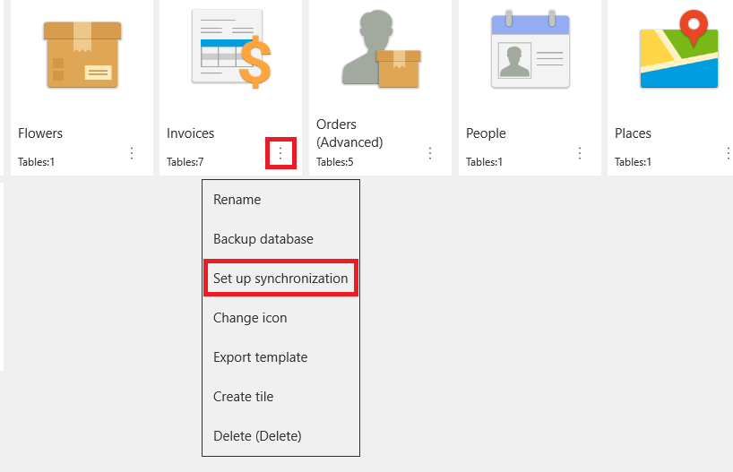
Select one of the available cloud storages and tap "Next" to proceed.
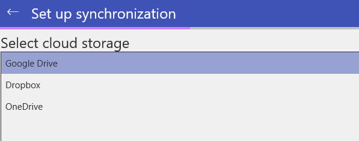
Specify the database name that can be used to identify the backup copy. Then tap "Next" again.
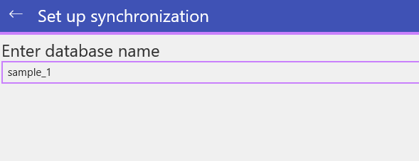
The data will start uploading to MobiDB cloud storage folder.
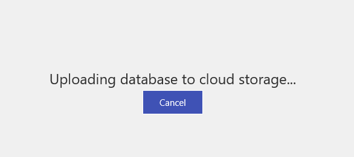
If everything is done correctly, you will be notified that the backup copy was created successfully. Tap on "Exit wizard" button to finish.
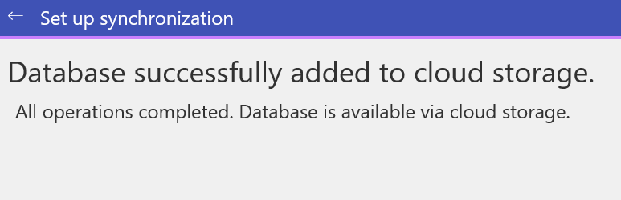
To notify whether the database is currently connected to a cloud, the Cloud sync icon is displayed in the bottom left corner of the database icon.
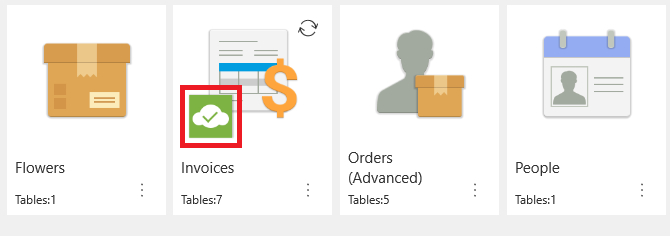
Syncing changes
Please note that all cloud syncs must be performed manually. To sync the changes it is either possible to select "Synchronize" option from the database options menu or tap the 'Sync' icon located in the upper right corner of the database icon.
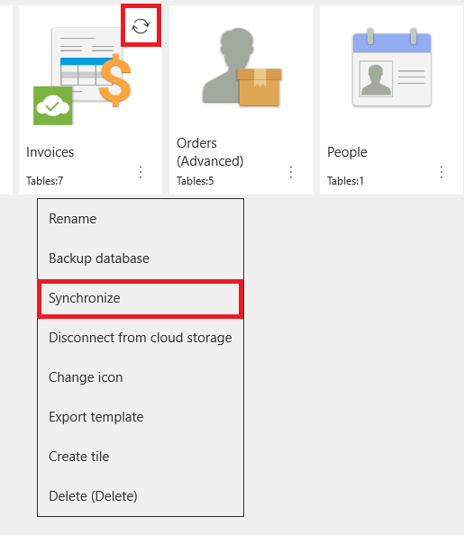
Disconnecting from the cloud
In case you would like to disconnect your database from cloud storage, select "Disconnect from cloud storage" option from the menu
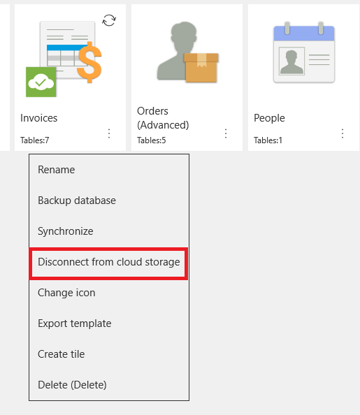
Then check if you would like to remove the database from the storage and press "OK" to confirm.
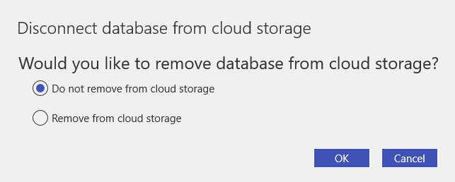
The 'Cloud sync' icon will no longer be visible after you disconnect the database from the cloud.
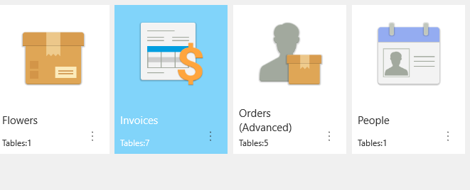
Connecting to a database from another device
To connect to an existing database stored in the cloud, the following steps should be performed.
Tap the 'Plus' icon on the upper panel and select 'Connect to cloud storage database'.
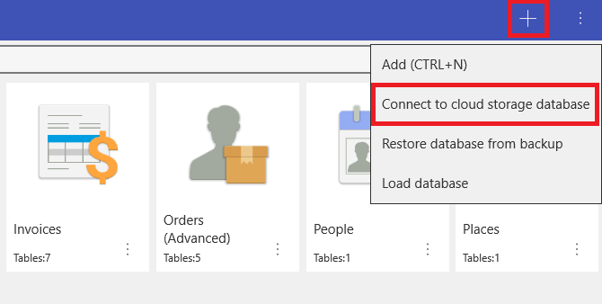
Select the cloud storage to connect to and tap "Next" to proceed.
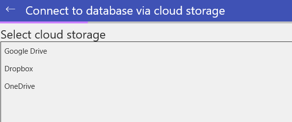
Select the database in the list, then tap "Next".

Set the name of the database and tap "Next" to start the database download process.
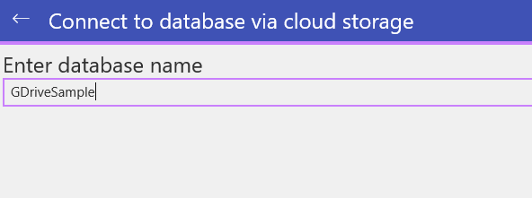
After the database is downloaded to your device, the notification window appears. The connected database will be added to the database list available on user's device.
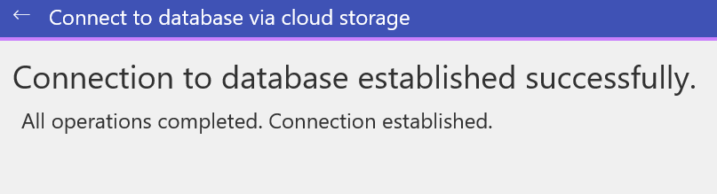